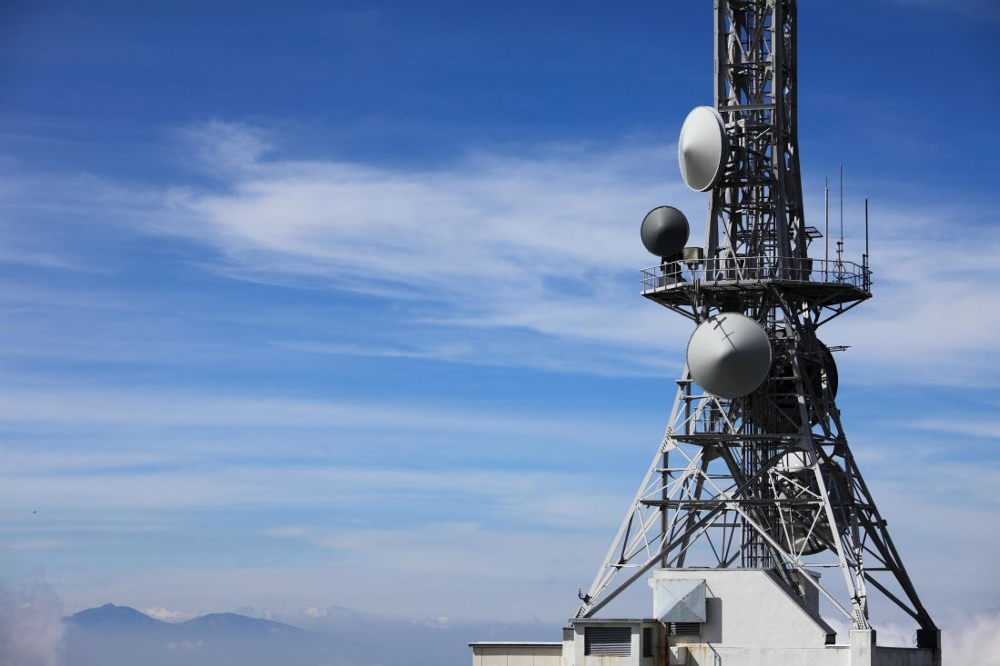

Who are we?

GETEL is one of the largest Congolese service providers technical services. Created in 2009, we are responsible for differentiating ourselves through our exceptional engineering know-how and a scientific approach to telecommunications and other systems by developing for our customers solutions adapted to their needs.
" We offer technical solutions adapted to the needs of our clients assisted by the brightest engineers, technicians, experts and consultants highly skilled. "
Fulgence Barhabazi, CEO
Over 30 years experiences in telecommunications